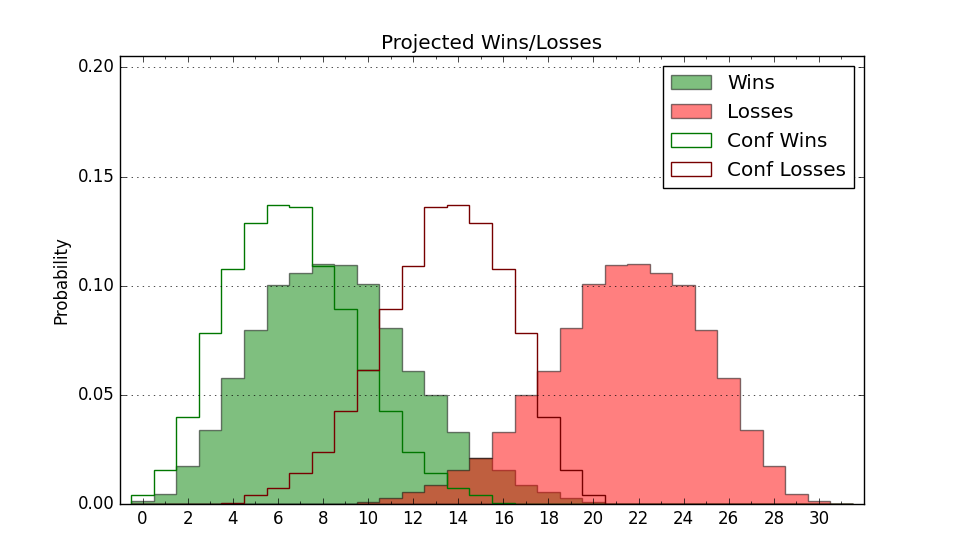

| Home | Game Probabilities | Conferences | Preseason Predictions | Odds Charts | NCAA Tournament |
| City: | Green Bay, Wisconsin | |
| Conference: | Horizon (1st)
| |
| Record: | 0-0 (Conf) 0-1 (Overall) | |
| Ratings: | Comp.: -18.1 (352nd) Net: -17.6 (288th) Off: 85.4 (297th) Def: 103.0 (203rd) SoR: 0.0 (181st) |
| Remaining | ||||||
|---|---|---|---|---|---|---|
| Date | Opponent | Win Prob | Pred. | |||
| 11/12 | @ Georgetown (100) | 4.6% | L 60-81 | |||
| 11/15 | @ Wisconsin (45) | 2.0% | L 52-78 | |||
| 11/18 | (N) Queens (277) | 30.7% | L 68-73 | |||
| 11/26 | Illinois Chicago (325) | 53.8% | W 70-69 | |||
| 12/1 | Milwaukee (344) | 60.3% | W 68-65 | |||
| 12/5 | IUPUI (361) | 78.1% | W 66-58 | |||
| 12/6 | @ Loyola Chicago (61) | 2.7% | L 53-77 | |||
| 12/10 | UMKC (333) | 57.3% | W 65-63 | |||
| 12/13 | @ St. Thomas MN (334) | 28.4% | L 69-75 | |||
| 12/16 | @ Stanford (51) | 2.2% | L 53-78 | |||
| 12/18 | @ Oregon St. (172) | 9.3% | L 59-75 | |||
| 12/29 | @ Detroit (243) | 15.0% | L 64-76 | |||
| 12/31 | @ Oakland (218) | 12.7% | L 63-76 | |||
| 1/5 | @ Fort Wayne (226) | 13.6% | L 61-74 | |||
| 1/7 | @ Cleveland St. (246) | 15.2% | L 64-75 | |||
| 1/12 | Wright St. (203) | 31.4% | L 69-74 | |||
| 1/14 | Northern Kentucky (192) | 29.8% | L 62-68 | |||
| 1/19 | Youngstown St. (229) | 35.2% | L 67-71 | |||
| 1/21 | Robert Morris (309) | 49.9% | L 68-69 | |||
| 1/26 | @ Northern Kentucky (192) | 11.1% | L 58-72 | |||
| 1/28 | @ Wright St. (203) | 11.9% | L 64-78 | |||
| 2/4 | @ IUPUI (361) | 51.2% | W 62-61 | |||
| 2/6 | @ Milwaukee (344) | 30.9% | L 64-69 | |||
| 2/9 | Oakland (218) | 33.1% | L 67-72 | |||
| 2/11 | Detroit (243) | 37.5% | L 68-72 | |||
| 2/16 | @ Robert Morris (309) | 22.6% | L 64-73 | |||
| 2/18 | @ Youngstown St. (229) | 13.8% | L 63-76 | |||
| 2/23 | Cleveland St. (246) | 38.0% | L 68-71 | |||
| 2/25 | Fort Wayne (226) | 34.8% | L 65-70 | |||
| Previous | Game Score | |||||
| Date | Opponent | Win Prob | Result | Off | Def | Net |
| 11/7 | @Indiana St. (144) | 7.4% | L 53-80 | -14.9 | 4.9 | -10.0 |
| Stats & Trends | |||||
|---|---|---|---|---|---|
| Current | Day | Week | Month | Season | |
| Composite | -18.1 | +0.0 | +0.0 | +0.0 | +0.0 |
| Comp Rank | 352 | +1 | +2 | +2 | +2 |
| Net Efficiency | -17.6 | +0.3 | -- | -- | -- |
| Net Rank | 288 | -24 | -- | -- | -- |
| Off Efficiency | 85.4 | +0.7 | -- | -- | -- |
| Off Rank | 297 | -31 | -- | -- | -- |
| Def Efficiency | 103.0 | -0.4 | -- | -- | -- |
| Def Rank | 203 | -22 | -- | -- | -- |
| SoS Rank | 122 | -16 | -- | -- | -- |
| Exp. Wins | 8.6 | +0.1 | -0.1 | -0.1 | -0.1 |
| Exp. Conf Wins | 6.6 | +0.1 | +0.1 | +0.1 | +0.1 |
| Conf Champ Prob | 0.5 | -0.0 | -- | -- | -- |

| Advanced Stats | ||
|---|---|---|
| Stat | Value | Rank |
| Off Eff FG % | 0.465 | 225 |
| Off Ast Ratio | 0.100 | 301 |
| Off ORB% | 0.087 | 334 |
| Off TO Rate | 0.193 | 287 |
| Off FT Ratio | 0.285 | 232 |
| Def Eff FG % | 0.578 | 305 |
| Def Ast Ratio | 0.175 | 311 |
| Def ORB% | 0.144 | 17 |
| Def TO Rate | 0.183 | 121 |
| Def FT Ratio | 0.211 | 41 |